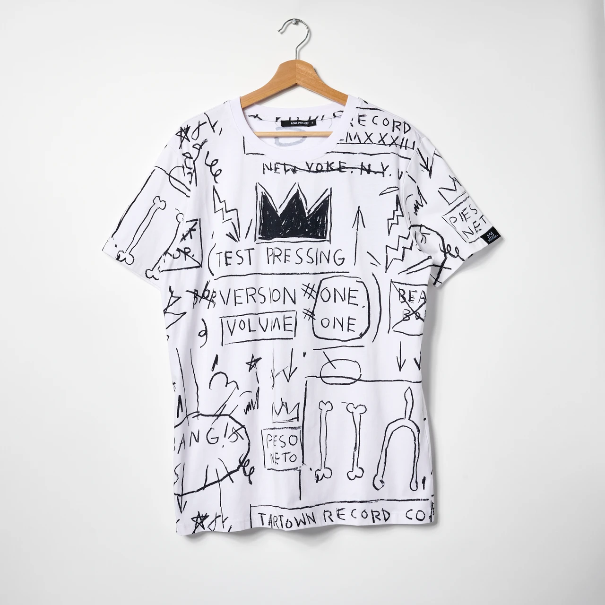

Oficinas e atividades práticas para diferentes públicos, com formatos rápidos e experiências guiadas.
CBCasaBeco apresenta · Beco do Batman
Semana Basquiat
Arte, graffiti e cultura urbana. Uma semana de experiências criativas que transforma referências da arte contemporânea em programação, convivência e novas oportunidades de receita.
Proposta para avaliação e aprovação da gestão *

ART!
Make art.
Make noise.Uma celebração da expressão urbana
Make noise.Uma celebração da expressão urbana
01 / A PROPOSTA
Uma semana para viver a arte.
Inspirada na energia visual e na atitude experimental de Jean-Michel Basquiat, a proposta conecta graffiti, pintura, moda, música e gastronomia em uma programação especial na CasaBeco, no coração do Beco do Batman.
Arte, cultura urbana, música e convivência em um ambiente aberto à participação.
Mais motivos para visitar, permanecer, consumir e compartilhar a experiência CasaBeco.
02 / EXPERIÊNCIAS E PRODUTOS
Da rua para a criação.
Atividades com participação do público e valores individuais sugeridos. Cada experiência pode funcionar como produto independente durante a semana.


Experiência 01
Graffiti à la Basquiat
Uma oficina prática inspirada na linguagem urbana de Basquiat: tags, lettering, coroas, dinossauros, palavras cruzadas e símbolos reconhecíveis. Cada participante aprende a combinar referências, composição e repetição para construir uma identidade visual própria.
A atividade acontece com orientação de artista e pode ser realizada sobre muro, tela ou painel, conforme o formato aprovado pela CasaBeco. Os materiais, o suporte e o espaço são preparados previamente para garantir uma experiência segura, criativa e fotografável.
TagR$ 150
BombR$ 250

Experiência 02
Experiências artísticas
Atividades acessíveis para experimentar desenho, stencil e pintura em diferentes suportes. O participante recebe orientação, materiais e um processo criativo pensado para iniciantes e pessoas com alguma experiência artística.
As opções variam entre uma atividade rápida de desenho, a criação de stencil em tela ou ecobag e propostas mais completas de pintura em tecido ou tela. Os formatos permitem atendimento individual, criação coletiva e registro do processo para publicação nas redes da CasaBeco.
Desenhe como BasquiatR$ 60
Stencil em tela ou ecobagR$ 150
Pintura em tecidoR$ 120
Pintura em telaR$ 250

Experiência 03
Customização de roupas
Uma experiência de moda e expressão pessoal baseada em DTF, stencil, Free Art, lettering e pintura manual. O participante pode transformar uma peça em uma criação exclusiva, inspirada na energia gráfica e na atitude experimental de Basquiat.
A customização aceita peças trazidas pelo próprio público ou produtos definidos pela CasaBeco. O formato pode incluir escolha de desenho, aplicação de stencil, pintura, acabamentos e orientação artística, com regras de produção e tempo de atendimento validadas antes da abertura das reservas.
FormatoA definir
Peça do participantePode trazer

Experiência 04 · Live Art
Live Paint no Beco
Ao longo da semana, artistas convidados farão pinturas ao vivo e transformarão o espaço da CasaBeco em um processo criativo aberto ao público. O público poderá acompanhar cada etapa da obra, tirar fotos e viver de perto a energia das artes visuais ganhando forma no Beco.
Enquanto a arte nasce, os visitantes poderão participar de oficinas, conversar com os artistas e experimentar diferentes técnicas ao redor da pintura. A programação é uma oportunidade para assistir à criação, produzir conteúdo e compartilhar uma experiência coletiva que une arte urbana, convivência e expressão.
FormatoPintura ao vivo
ParticipaçãoFotos + oficinas
03 / CAFÉ E BAR
Café + bar.

Café + bar · Edição especial
Um cardápio com identidade.
Espresso, cappuccino, latte, sodas artesanais, drinks autorais e bebidas alcoólicas. Apresentação especial inspirada nas cores e na linguagem gráfica do evento, incentivando o consumo durante as atividades.
04 / EVENTO PRINCIPAL · 11.12
Watch party Basquiat.

Uma noite de arte, filme e conversa.
Encontro especial na CasaBeco com recepção, sessão coletiva do documentário, conversa e experiências artísticas. Uma oportunidade de concentrar público e ativar o café e o bar em uma noite temática.
19h–22hHorário sugerido
1h35Duração informada
11/12Data proposta
A realização da exibição pública depende de confirmação do título, disponibilidade e obtenção das autorizações/licenças necessárias. Não há parceria oficial presumida com a Netflix ou com os detentores dos direitos.
Watch Party
Ingresso com consumação mínima no café.
R$ 30Basquiat Drinks
Crédito de R$ 40 para drinks selecionados.
R$ 40Basquiat Art Pass
Crédito de R$ 150 para experiências artísticas: muro, tela ou customização, conforme disponibilidade e regras a definir.
R$ 150
05 / AMBIENTAÇÃO E IDENTIDADE
Uma ocupação visual marcante.
Uma identidade de alto contraste, com cores vibrantes, tipografia expressiva, palavras, coroas, anatomia, símbolos e referências à cultura urbana. A proposta é criar uma atmosfera coerente sem perder a personalidade da CasaBeco.


Exposição de referências · Playlist temática · Pintura ao vivoCriação coletiva · Conteúdo audiovisual
06 / VALOR PARA A CASABECO
Ativação cultural com potencial comercial.
A programação combina experiências pagas, consumo e conteúdo, criando diferentes pontos de contato com o público ao longo da semana.
Fluxo de visitantes
Um tema reconhecível e uma programação especial como motivo adicional para visitar o espaço.
Receita com experiências
Oficinas, atividades criativas e customização como produtos comercializáveis.
Consumo no café e bar
Cardápio temático e formatos de participação que estimulam o consumo.
Maior permanência
Atividades e programação cultural que convidam o público a ficar mais tempo.
Conteúdo e divulgação
Registros de oficinas, pintura ao vivo e encontros para redes sociais e divulgação orgânica.
Posicionamento cultural
Reforço da CasaBeco como espaço de arte, experimentação e experiências no Beco do Batman.
Modelo de operação: combinar atividades de entrada acessível com experiências de maior valor, além de ativar o café e o bar durante toda a programação.
Próxima etapa: validar agenda, equipe, materiais, capacidade de atendimento, custos, preços finais e condições de realização antes da divulgação pública.
07 / Encerramento · CasaBeco · Proposta para aprovação
Vamos transformar a semana em uma experiência?
A Semana Basquiat propõe uma programação integrada de arte, cultura urbana e consumo, com formatos flexíveis e potencial para fortalecer a presença da CasaBeco como ponto de encontro criativo no Beco do Batman.
ARTE
NA RUA
NA RUA